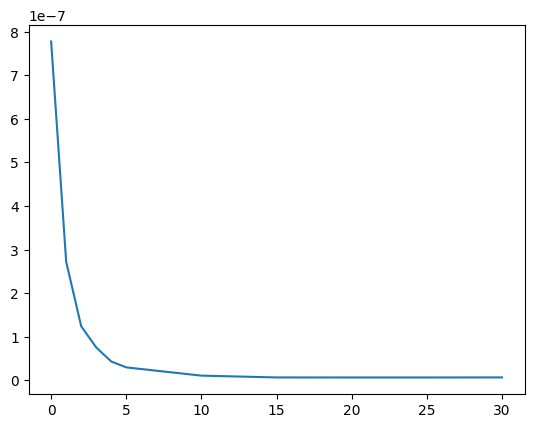
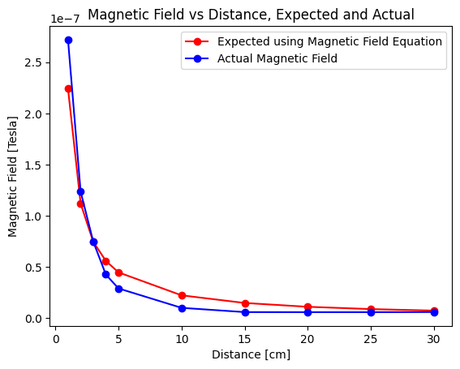

import pandas as pd
import matplotlib.pyplot as plt
import numpy as npPart 2
Part 2.1: Plotting H20 Linear Plots
## https://stackoverflow.com/questions/893657/how-do-i-calculate-r-squared-using-python-and-numpy
# Polynomial Regression
def polyfit(x, y, degree):
results = {}
coeffs = np.polyfit(x, y, degree)
# Polynomial Coefficients
results['polynomial'] = coeffs.tolist()
# r-squared
p = np.poly1d(coeffs)
# fit values, and mean
yhat = p(x) # or [p(z) for z in x]
ybar = np.sum(y)/len(y) # or sum(y)/len(y)
ssreg = np.sum((yhat-ybar)**2) # or sum([ (yihat - ybar)**2 for yihat in yhat])
sstot = np.sum((y - ybar)**2) # or sum([ (yi - ybar)**2 for yi in y])
results['determination'] = ssreg / sstot
return results# Create a DataFrame
five_Mhz = {'Voltage (mV)': [1.5, 1.4, 1.3, 1.2, 1.1, 1, 0.9, 0.8, 0.7, 0.6, 0.5, 0.4, 0.3, 0.2],
'Amplitude Power': [11.2, 11.2, 10.2, 9, 8.2, 7.8, 6.4, 5.4, 4.2, 3, 2.7, 2, 1.7, 0.8],
'Power (dBm)': [-64,-64,-65,-66.5,-67,-67,-68,-69,-70.9,-71.8,-73.5,-74.6,-77.2,-79.5]}
df_h20_fiveMHz = pd.DataFrame(five_Mhz)plt.plot(df_h20_fiveMHz['Voltage (mV)'])## Find the current
resistanceVal = 1.0
numTurns = 75
radius = 2.51 / 2 * 0.01 ## in meters
df_h20_fiveMHz['Current (mA)'] = df_h20_fiveMHz['Voltage (mV)'] / resistanceVal
df_h20_fiveMHz['Num'] = df_h20_fiveMHz['Current (mA)'] * np.pow(10.0, -3) * numTurns * 8 * 4 * np.pi * np.pow(10.0, -7)
df_h20_fiveMHz['Denom'] = (radius/2)*np.sqrt(125)
df_h20_fiveMHz['Magnetic Field'] = df_h20_fiveMHz['Num']/df_h20_fiveMHz['Denom']plt.plot(df_h20_fiveMHz['Power (dBm)'], df_h20_fiveMHz['Magnetic Field'])
plt.ylabel("Power dBm")
plt.xlabel("Field Strength")Text(0.5, 0, 'Field Strength')# Create a DataFrame
hund_khz = {'Voltage (mV)': [1.5, 1.4, 1.3, 1.2, 1.1, 1, 0.9, 0.8, 0.7, 0.6, 0.5, 0.4, 0.3],
'Amplitude Power': [450,420,400,370,350,320,300,250,230,220,200,180,160],
'Power (dBm)': [-8.80,-9.36,-9.91,-10.55,-11.28,-12.03,-12.88,-14.01,-15.16,-16.43,-18.01,-19.99,-22.47]}
df_h20_hundkhz = pd.DataFrame(hund_khz)
df_h20_hundkhz['Current (mA)'] = df_h20_fiveMHz['Voltage (mV)'] / resistanceValdf_h20_hundkhz['Current (mA)'] = df_h20_fiveMHz['Voltage (mV)'] / resistanceVal
df_h20_hundkhz['Num'] = df_h20_fiveMHz['Current (mA)'] * 100 * numTurns * 8 * 4 * np.pi * np.pow(10.0, -7)
df_h20_hundkhz['Denom'] = (0.15/2)*np.sqrt(125)
df_h20_hundkhz['Magnetic Field'] = df_h20_hundkhz['Num']/df_h20_fiveMHz['Denom']plt.plot(df_h20_hundkhz['Power (dBm)'], df_h20_hundkhz['Magnetic Field'])
plt.xlabel("Power dBm")
plt.ylabel("Field Strength")Text(0, 0.5, 'Field Strength')pow_hund = df_h20_hundkhz['Power (dBm)']
pow_fivM = df_h20_fiveMHz['Power (dBm)']
rsq_hundkhz = polyfit(pow_hund, df_h20_hundkhz['Magnetic Field'], 1)
rsp_fivemhz = polyfit(pow_fivM, df_h20_fiveMHz['Magnetic Field'], 1)
plt.title("Low-f Field Power Calibration, H20")
plt.plot(pow_hund, np.log(df_h20_hundkhz['Magnetic Field']), 'r.-')
plt.plot(pow_fivM, np.log(df_h20_fiveMHz['Magnetic Field']), 'b.-')
plt.legend
plt.xlabel("Power (dBm)")
plt.ylabel("B (Tesla)")
print(f"R^2 linear fit of 100 kHz: {rsq_hundkhz['determination']} with equation {rsq_hundkhz['polynomial'][1]} + {rsq_hundkhz['polynomial'][0]}*POW")
print(f"R^2 linear fit of 5 MHz: {rsp_fivemhz['determination']} with equation {rsp_fivemhz['polynomial'][1]} + {rsp_fivemhz['polynomial'][0]}*POW")
intercept = rsq_hundkhz['polynomial'][1]R^2 linear fit of 100 kHz: 0.946653461235132 with equation 2.2887766684445205 + 0.09497986617819947*POW
R^2 linear fit of 5 MHz: 0.9494685301857625 with equation 7.165163632162302e-05 + 8.94920345771188e-07*POWPart 2.2 Plotting H20 with Constant Field
# Create a DataFrame
freqtopow_4_8 = {'Frequency (MHz)': [1, 0.9, 0.8, 0.7, 0.6, 0.5, 0.4, 0.3, 0.2, 0.1],
'Power (dBm)': [-9.86,-10.63,-11.56,-12.54,-13.90,-15.57,-17.43,-19.85,-22.97,-29.07]}
df_h20_freqtopow_4_8mV = pd.DataFrame(freqtopow_4_8)plt.plot(df_h20_freqtopow_4_8mV['Frequency (MHz)'], df_h20_freqtopow_4_8mV['Power (dBm)'], 'ro-')
plt.xlabel("Frequency (MHz)")
plt.ylabel("Power (dBm)")
plt.xscale("log")r_squared_h20 = polyfit(df_h20_freqtopow_4_8mV['Frequency (MHz)'], df_h20_freqtopow_4_8mV["Power (dBm)"], 2)
h20_freq = df_h20_freqtopow_4_8mV['Frequency (MHz)']
print(r_squared_h20['determination'])
intercept = r_squared_h20['polynomial'][2]
lin_slope = r_squared_h20['polynomial'][1]
qud_slope = r_squared_h20['polynomial'][0]0.9864122266816567plt.plot(h20_freq, (h20_freq**2)*qud_slope + (h20_freq)*lin_slope + intercept)
plt.plot(h20_freq, df_h20_freqtopow_4_8mV["Power (dBm)"])
print(f"{qud_slope:.2f}*freq^2 + {lin_slope:.2f}*freq + {intercept:.2f}")-23.33*freq^2 + 44.87*freq + -32.04# Create a DataFrame
freqtopow_4_8_incEnd = {'Frequency (MHz)': [5, 4, 3, 2, 1, 0.9, 0.8, 0.7, 0.6, 0.5, 0.4, 0.3, 0.2, 0.1],
'Power (dBm)': [-10.48,-10.2,-10.16,-9.96,-9.86,-10.63,-11.56,-12.54,-13.90,-15.57,-17.43,-19.85,-22.97,-29.07]}
df_h20_freqtopow_4_8mV_end = pd.DataFrame(freqtopow_4_8_incEnd)plt.plot(df_h20_freqtopow_4_8mV_end['Frequency (MHz)'], df_h20_freqtopow_4_8mV_end['Power (dBm)'], 'ro-')
plt.title("Coil Frequency Response, H20")
plt.xlabel("Frequency (MHz)")
plt.ylabel("Power (dBm)")
plt.xscale("log")## Defining H20's readouts for 100 kHz current to Power and 5 MHz current to Power
curr_100_h20 = {'Current (mA)': [45, 42,40,37,35,32,30,25,23,22,20,18,16],
'Power (dBm)': [-8.80,-9.36,-9.91,-10.55,-11.28,-12.03,-12.88,-14.01,-15.16,-16.43,-18.01,-19.99,-22.47]}
df_curr_100_h20 = pd.DataFrame(curr_100_h20)
list_vals = [i/0.9 for i in [ 11.2, 11.2, 10.2, 9, 8.2, 7.8, 6.4, 5.4, 4.2, 3, 2.7, 2, 1.7, 0.8]]
curr_5M_h20 = {'Current (mA)': list_vals,
'Power (dBm)': [-64, 64,-65,-66.5,-67,-67,-68,-69,-70.9,-71.8,-73.5,-74.6,-77.2,-79.5] }
df_curr_5M_h20 = pd.DataFrame(curr_5M_h20)
## assumes that all units are correct - i.e. Amperes, meters
def convertToMagField(curr_val, num_coils, radius):
u0 = 4 * np.pi * 1e-7
coeff = 8 / np.sqrt(125)
num = [i * num_coils * u0 * coeff for i in curr_val]
return [i/radius for i in num]
print(curr_100_h20['Current (mA)'])
convertToMagField(curr_100_h20['Current (mA)'], 75, 0.0125)
# curr_100_h20['Magnetic Field (T)'] = convertToMagField(curr_100_h20['Current (mA)']*pow(10, -3), 75, 2.51/(100*2))[45, 42, 40, 37, 35, 32, 30, 25, 23, 22, 20, 18, 16][np.float64(0.24277759710476748),
np.float64(0.22659242396444965),
np.float64(0.21580230853757107),
np.float64(0.19961713539725326),
np.float64(0.1888270199703747),
np.float64(0.17264184683005687),
np.float64(0.16185173140317832),
np.float64(0.13487644283598194),
np.float64(0.12408632740910339),
np.float64(0.1186912696956641),
np.float64(0.10790115426878553),
np.float64(0.097111038841907),
np.float64(0.08632092341502844)]## assumes that all units are correct - i.e. Amperes, meters
def convertToMagField_Int(curr_val, num_coils, radius):
u0 = 4 * np.pi * pow(10, -7)
coeff = 8 / np.sqrt(125)
num = curr_val * num_coils * u0 * coeff
return num/radius
print(convertToMagField_Int(4.8*1e-3, 75, 1e-2*2.51/2)*1e6)
print(convertToMagField_Int(6.4*1e-3, 75, 1e-2*2.51/2)*1e6)25.7931046060842
34.3908061414456## additional calculations to help:
print(f"numTurns = {numTurns}, radius = {radius}")
curr = 4.8 * np.pow(10.0, -3)
num = curr * numTurns * 8 * 4 * np.pi * np.pow(10.0, -7)
denom = (radius/2)*np.sqrt(125)
mag_field = num/denom
print(f"{mag_field * np.pow(10.0, 6)} uT")numTurns = 75, radius = 0.012549999999999999
51.58620921216839 uT## additional calculations to help:
curr = 6.4 * np.pow(10.0, -3)
num = curr * numTurns * 8 * 4 * np.pi * np.pow(10.0, -7)
denom = (radius/2)*np.sqrt(125)
mag_field = num/denom
print(f"{mag_field * np.pow(10.0, 6)} uT")68.78161228289119 uTPart 2.3: Plotting H10 and H15 Values
Part 2.3 Plotting H10 and H5
h10_100k = {'Current (mA)': [50.4, 46.0, 41.2, 36.4, 31.2, 26.2, 22.0, 16.4, 11.6],
'Power (dBm)': [-18.2, -19.44, -20.46, -21.62, -22.97, -24.54, -26.49, -28.99, -32.51]}
h10_5M = {'Current (mA)': [4.5, 4.1, 3.7, 3.2, 2.8, 2.3, 1.9, 1.4, 1.1],
'Power (dBm)': [-18.9, -19.81, -20.83, -22.01, -23.37, -24.95, -26.88, -29.38, -32.94]}
#####--------#####--------#####
h5_100k = {'Current (mA)': [51.6, 46.8, 41.6, 36.2, 31.2, 26.0, 20.8, 15.6, 10.4],
'Power (dBm)': [-31.16, -32.10, -33.11, -34.28, -35.6, -37.19, -39.13, -41.63, -45.15]}
h5_5M = {'Current (mA)': [4.8, 3.9, 3.4, 3, 2.56, 2.2, 1.7, 1.3, 0.9],
'Power (dBm)': [-32.95, -33.87, -34.89, -36.04, -37.38, -38.95, -40.89, -43.36, -46.87]}
#####--------#####--------#####
hund_khz = {'Voltage (mV)': [1.5, 1.4, 1.3, 1.2, 1.1, 1, 0.9, 0.8, 0.7, 0.6, 0.5, 0.4, 0.3],
'Amplitude Power': [450,420,400,370,350,320,300,250,230,220,200,180,160],
'Power (dBm)': [-8.80,-9.36,-9.91,-10.55,-11.28,-12.03,-12.88,-14.01,-15.16,-16.43,-18.01,-19.99,-22.47]}
df_h20_hundkhz = pd.DataFrame(hund_khz)
df_h20_hundkhz['Current (mA)'] = df_h20_fiveMHz['Voltage (mV)'] / resistanceVal
df_h20_hundkhz['Num'] = df_h20_hundkhz['Current (mA)'] * np.pow(10.0, -3) * numTurns * 8 * 4 * np.pi * np.pow(10.0, -7)
df_h20_hundkhz['Magnetic Field'] = df_h20_hundkhz['Num']/denom
five_Mhz = {'Voltage (mV)': [1.5, 1.4, 1.3, 1.2, 1.1, 1, 0.9, 0.8, 0.7, 0.6, 0.5, 0.4, 0.3],
'Power (dBm)': [-10.99,-11.51, -12.05, -12.69, -13.41, -14.15, -15.01, -15.95, -17.12, -18.41, -19.96, -21.95, -24.46]}
df_h20_fiveMHz = pd.DataFrame(five_Mhz)
df_h20_fiveMHz['Current (mA)'] = df_h20_fiveMHz['Voltage (mV)'] / resistanceVal
df_h20_fiveMHz['Num'] = df_h20_fiveMHz['Current (mA)'] * np.pow(10.0, -3) * numTurns * 8 * 4 * np.pi * np.pow(10.0, -7)
df_h20_fiveMHz['Magnetic Field'] = df_h20_fiveMHz['Num']/denomdf_h10_100k = pd.DataFrame(h10_100k)
df_h10_5M = pd.DataFrame(h10_5M)
df_h5_100k = pd.DataFrame(h5_100k)
df_h5_5M = pd.DataFrame(h5_5M)## Find the current
resistanceVal = 1.0
numTurns = 75
radius = 2.51 / 2 * 0.01 ## in meters
denom = (radius/2)*np.sqrt(125)
df_h10_100k['Num'] = df_h10_100k['Current (mA)'] * np.pow(10.0, -3) * numTurns * 8 * 4 * np.pi * np.pow(10.0, -7)
df_h10_100k['Magnetic Field'] = df_h10_100k['Num']/denom
# print(df_h10_100k['Magnetic Field'])
df_h10_5M['Num'] = df_h10_5M['Current (mA)'] * np.pow(10.0, -3) * numTurns * 8 * 4 * np.pi * np.pow(10.0, -7)
df_h10_5M['Magnetic Field'] = df_h10_5M['Num']/denom
# print(df_h10_5M['Magnetic Field'])
df_h5_100k['Num'] = df_h5_100k['Current (mA)'] * np.pow(10.0, -3) * numTurns * 8 * 4 * np.pi * np.pow(10.0, -7)
df_h5_100k['Magnetic Field'] = df_h5_100k['Num']/denom
df_h5_5M['Num'] = df_h5_5M['Current (mA)'] * np.pow(10.0, -3) * numTurns * 8 * 4 * np.pi * np.pow(10.0, -7)
df_h5_5M['Denom'] = (radius/2)*np.sqrt(125)
df_h5_5M['Magnetic Field'] = df_h5_5M['Num']/denompow_hund = df_h5_100k['Power (dBm)']
pow_fivM = df_h5_5M['Power (dBm)']
mag_hund = df_h5_100k['Magnetic Field'] # Tesla
mag_fivM = df_h5_5M['Magnetic Field'] # Tesla
rsq_hundkhz = polyfit(pow_hund, df_h5_100k['Magnetic Field'], 1)
rsp_fivemhz = polyfit(pow_fivM, df_h5_5M['Magnetic Field'], 1)
plt.title("Low-f Field Power Calibration, H20, B=25.7931046060842 uT")
plt.xlabel("Power (dBm)")
plt.ylabel("Magnetic Field (uT)")
plt.plot(df_h20_hundkhz['Power (dBm)'], df_h20_hundkhz['Magnetic Field']*1e6, 'r.-', label="100 kHz")
plt.plot(df_h20_fiveMHz['Power (dBm)'], df_h20_fiveMHz['Magnetic Field']*1e6, 'b.-', label="5 MHz")
plt.yscale("log")
plt.legend()
pow_hund = df_h10_100k['Power (dBm)']
pow_fivM = df_h10_5M['Power (dBm)']
mag_hund = df_h10_100k['Magnetic Field']
mag_fivM = df_h10_5M['Magnetic Field']
rsq_hundkhz = polyfit(pow_hund, df_h10_100k['Magnetic Field'], 1)
rsp_fivemhz = polyfit(pow_fivM, df_h10_5M['Magnetic Field'], 1)
## power proportional to B^2
plt.title("Low-f Field Power Calibration, H10, B=34.3908061414456 uT")
plt.xlabel("Power (dBm)")
plt.ylabel("Magnetic Field (uT)")
plt.plot(pow_hund, mag_hund*1e6, 'r.-', label="100 kHz")
plt.plot(pow_fivM, mag_fivM*1e6, 'b.-', label="5 MHz")
plt.yscale("log")
plt.legend()
pow_hund = df_h5_100k['Power (dBm)']
pow_fivM = df_h5_5M['Power (dBm)']
mag_hund = df_h5_100k['Magnetic Field']
mag_fivM = df_h5_5M['Magnetic Field']
pow_h5_hund = pow_hund
pow_h5_fivM = pow_fivM
h5_mag_hund = mag_hund
h5_h10_fivM = mag_fivM
rsq_hundkhz = polyfit(pow_hund, df_h5_100k['Magnetic Field'], 1)
rsp_fivemhz = polyfit(pow_fivM, df_h5_5M['Magnetic Field'], 1)
plt.title("Low-f Field Power Calibration, H5, B=34.3908061414456 uT")
plt.xlabel("Power (dBm)")
plt.ylabel("Magnetic Field (uT)")
plt.plot(pow_hund, mag_hund*1e6, 'r.-', label="100 kHz")
plt.plot(pow_fivM, mag_fivM*1e6, 'b.-', label="5 MHz")
plt.yscale("log")
plt.legend()rsq_freq = polyfit(np.log(df_h5_htp['Frequency (MHz)']), df_h5_htp['Power (dBm)'], 1)
freq = df_h5_htp['Frequency (MHz)']
powe = df_h5_htp['Power (dBm)']
print(f"Slope {rsq_freq['polynomial'][0]}")
slope = rsq_freq['polynomial'][0] ## slope for the np.log(freq)
matching = rsq_freq['polynomial'][1] + rsq_freq['polynomial'][0]*np.log(freq)
plt.plot(freq, matching)
plt.plot(freq, powe)
plt.xlabel("Frequency")
plt.ylabel("Power")
plt.title("Frequency vs Power")--------------------------------------------------------------------------- NameError Traceback (most recent call last) Cell In[30], line 1 ----> 1 rsq_freq = polyfit(np.log(df_h5_htp['Frequency (MHz)']), df_h5_htp['Power (dBm)'], 1) 3 freq = df_h5_htp['Frequency (MHz)'] 4 powe = df_h5_htp['Power (dBm)'] NameError: name 'df_h5_htp' is not defined
plt.plot(df_h20_hundkhz['Power (dBm)'], df_h20_hundkhz['Magnetic Field'], 'r.-', label="H20 (25.7931046060842 uT)")
plt.plot(df_h10_100k['Power (dBm)'], df_h10_100k['Magnetic Field'], 'b.-', label="H10 (34.3908061414456 uT)")
plt.plot(df_h5_100k['Power (dBm)'], df_h5_100k['Magnetic Field'], 'g.-', label="H5 (34.3908061414456 uT)")
plt.title("Low-f Field Power Calibration at 100 kHz")
plt.xlabel("Power (dBm)")
plt.ylabel("Magnetic Field (uT)")
plt.yscale("log")
plt.legend()plt.plot(df_h20_fiveMHz['Power (dBm)'], df_h20_fiveMHz['Magnetic Field'], 'r.-', label="H20 (25.7931046060842 uT)")
plt.plot(df_h10_5M['Power (dBm)'], df_h10_5M['Magnetic Field'], 'b.-', label="H10 (34.3908061414456 uT)")
plt.plot(df_h5_5M['Power (dBm)'], df_h5_5M['Magnetic Field'], 'g.-', label="H5 (34.3908061414456 uT)")
plt.title("Low-f Field Power Calibration at 5 MHz")
plt.xlabel("Power (dBm)")
plt.ylabel("Magnetic Field (uT)")
plt.yscale("log")
plt.legend()Part 2.4 Plotting all Frequency vs Magnitudes Together (H20, H10, H5)
## the magnetic field for both of these is computed using a current = 6.4 mA (roughly)
current_v2 = 6.4 * np.pow(10.0, -3)
num_magfield = current_v2 * numTurns * 8 * 4 * np.pi * np.pow(10.0, -7)
mag_field = denom
## we know the magnetic field is constant; for these, we only vary the frequency and find the power
h10_htp = {'Frequency (MHz)': [1, 0.9, 0.8, 0.7, 0.6, 0.5, 0.4, 0.3, 0.2, 0.1],
'Power (dBm)': [-19.06, -19.96, -20.66, -21.67, -22.93, -24.04, -26.08, -28.21, -31.18, -36.93]}
h5_htp = {'Frequency (MHz)': [1, 0.9, 0.8, 0.7, 0.6, 0.5, 0.4, 0.3, 0.2, 0.1],
'Power (dBm)': [-32.74, -33.63, -34.3, -35.25, -36.45, -37.5, -39.46, -41.46, -44.25, -49.52]}
df_h10_htp = pd.DataFrame(h10_htp)
df_h5_htp = pd.DataFrame(h5_htp)plt.plot(df_h10_htp['Frequency (MHz)'], df_h10_htp['Power (dBm)'], 'r.-', label="H10")
plt.plot(df_h5_htp['Frequency (MHz)'], df_h5_htp['Power (dBm)'], 'b.-', label="H5")
plt.xlabel("Frequency (MHz)")
plt.ylabel("Power (dBm)")
plt.title("Power vs Frequency (for B = 34.3908061414456 uT, H5 and H10)")
plt.xscale("log")
plt.legend()Part 3: Graphing the Magnetic Field vs Distance from Infinite Wire
## Initial Data (too small)
infwire_h20_5M = {'Distance (inches)': [0.0, 0.1, 0.2],
'Power (dBm)': [-61.7, -65, -67.2]}
df_infwire_h20_5M = pd.DataFrame(infwire_h20_5M)
infwire_h20_100k = {'Distance (inches)': [0.0, 0.1, 0.2],
'Power (dBm)': [-69.3, -83, -90]}
df_infwire_h20_100k = pd.DataFrame(infwire_h20_100k)plt.plot(df_infwire_h20_5M['Distance (inches)'], df_infwire_h20_5M['Power (dBm)'], 'ro-')
plt.plot(df_infwire_h20_100k['Distance (inches)'], df_infwire_h20_100k['Power (dBm)'], 'bo-')
plt.xlabel("Distance (inches)")
plt.ylabel("Power (dBm)")Text(0, 0.5, 'Power (dBm)')Graphing With More Datapoints (November 4)
inf_h20_5M = {'cm': [0,1,2,3,4,5,10,15,20,25,30],
'power': [-36.2,-45.0,-51.6,-55.8,-60.5,-63.7,-72.5,-76.9,-77,-77,-76.8]
}
inf_h20_100k = {'cm': [0,1,2,3,4,5,10,15,20,25,30],
'power': [ -69.2,-78.6,-86.3,-93.4,-97,-97,-97,-97,-97,-97,-97]
}
inf_h20_500k = {'cm': [0,1,2,3,4,5,10,15,20,25,30],
'power': [-54.5,-64.0,-70.8,-76.0,-80.9,-84.6,-96.9,-100.8,-102,-102,-102]
}
df_inf_h20_5M = pd.DataFrame(inf_h20_5M)
df_inf_h20_100k = pd.DataFrame(inf_h20_100k)
df_inf_h20_500 = pd.DataFrame(inf_h20_500k) plt.plot(df_inf_h20_5M['cm'], df_inf_h20_5M['power'], 'ro-', label="5 MHz")
plt.plot(df_inf_h20_100k['cm'], df_inf_h20_100k['power'], 'b.-', label="100 kHz")
plt.plot(df_inf_h20_500['cm'], df_inf_h20_500['power'], 'go-', label="500 kHz")
plt.xlabel("Distance (cm)")
plt.ylabel("Power (dBm)")
plt.legend()Graphing Odd Behavior in the E-Field
e_field_VtoP_075_cm_28M = {'voltage': [0.25, 0.46, 0.67, 0.9, 1.13, 1.35, 1.6, 1.82, 2.04, 2.24],
'power': [-53.8, -46.8, -43.7, -41.2, -39.21, -37.6, -36.3, -35.12, -34.06, -32.7]
}
# 0.174 V
e_field_ftoP_075cm_0_174V = {'frequency': [38, 37, 36, 35, 34, 33, 32, 31, 30],
'power': [-42, -42, -39, -37, -40, -42, -48, -50, -52.6]
}
df_e_field_VtoP_075_cm_28M = pd.DataFrame(e_field_VtoP_075_cm_28M)
df_e_field_ftoP_075cm_0_174V= pd.DataFrame(e_field_ftoP_075cm_0_174V)plt.plot(df_e_field_VtoP_075_cm_28M['voltage']/0.075, df_e_field_VtoP_075_cm_28M['power'], 'ro-', label="28 MHz, d=0.75cm")
plt.xlabel("Electric Field (V/m)")
plt.ylabel("Power (dBm)")
plt.title("Power vs Electric Field Plot")
plt.legend()
plt.plot(df_e_field_VtoP_075_cm_28M['voltage']/0.075, df_e_field_VtoP_075_cm_28M['power'], 'ro-', label="28 MHz, d=0.75cm")
plt.xlabel("Electric Field (V/m)")
plt.ylabel("Power (dBm)")
plt.title("Power vs Electric Field Plot")
plt.xscale("log")
plt.legend()
df_e_field_VtoP_075_cm_28M['e_field'] = df_e_field_VtoP_075_cm_28M['voltage']/0.075
rsq_freq = polyfit(df_e_field_VtoP_075_cm_28M['power'], np.log(df_e_field_VtoP_075_cm_28M['e_field']), 1)
slope = rsq_freq['polynomial'][0] ## slope for the np.log(freq)
interc = rsq_freq['polynomial'][1] ## slope for the np.log(freq)
plt.plot(df_e_field_VtoP_075_cm_28M['power'], np.exp(interc + slope*df_e_field_VtoP_075_cm_28M['power']), 'r.-', label="Fit Line")
plt.plot(df_e_field_VtoP_075_cm_28M['power'], df_e_field_VtoP_075_cm_28M['e_field'], 'b.-', label="Original Function")
print(f"If we wanted to get a dB of -18 dB, ")If we wanted to get a dB of -18 dB, 
df_e_field_VtoP_075_cm_28M['e_field'] = df_e_field_VtoP_075_cm_28M['voltage']/0.075
rsq_freq = polyfit(df_e_field_VtoP_075_cm_28M['power'], np.log(df_e_field_VtoP_075_cm_28M['e_field']), 1)
slope = rsq_freq['polynomial'][0] ## slope for the np.log(freq)
interc = rsq_freq['polynomial'][1] ## slope for the np.log(freq)
plt.plot(df_e_field_VtoP_075_cm_28M['power'], interc + slope*df_e_field_VtoP_075_cm_28M['power'], 'r.-', label="Fit Line")
plt.plot(df_e_field_VtoP_075_cm_28M['power'], np.log(df_e_field_VtoP_075_cm_28M['e_field']), 'b.-', label="Original Function")
plt.xlabel("Power [dBm]")
plt.ylabel("Log of Electric Field [ log(V/m) ]")
e_field_18_9_dB = np.exp(interc + slope*(-18.9))
print(f"If we wanted to get a dB of -18 dB, we would need an electric field of {e_field_18_9_dB}")If we wanted to get a dB of -18 dB, we would need an electric field of 136.47394732535687
plt.plot(df_e_field_ftoP_075cm_0_174V['frequency'], df_e_field_ftoP_075cm_0_174V['power'], 'ro-', label="0.174 V, d=0.75cm")
plt.xlabel("Frequency (MHz)")
plt.ylabel("Power (dBm)")
plt.title("Electric Probe Power vs Frequency Plot")
plt.legend()
Part 4: Graphing
Calculating the Polyfit for the Frequency to Magnetic Field Data
freq = [i*np.pow(10, 6) for i in df_h5_htp['Frequency (MHz)']]
powe = df_h5_htp['Power (dBm)']
rsq_freq = polyfit(np.log(freq), powe, 1)
print(f"Slope {rsq_freq['polynomial'][0]}")
slope = rsq_freq['polynomial'][0] ## slope for the np.log(freq)
matching = rsq_freq['polynomial'][1] + rsq_freq['polynomial'][0]*np.log(freq)
add_pts_xaxis = [freq[0], 28*np.pow(10, 6)]
add_pts = [matching[0], rsq_freq['polynomial'][1] + rsq_freq['polynomial'][0]*np.log(28*np.pow(10, 6))]
plt.plot(freq, powe, label="Original Data", linewidth=2)
plt.plot(freq, matching, '--', label="Line of Best Fit", linewidth=3)
plt.plot(add_pts_xaxis[1], add_pts[1], 'go', label="Estimated Location of dB for 28 MHz")
plt.xlabel("Frequency (MHz)")
plt.ylabel("Power")
plt.xscale("log")
plt.title("Frequency vs Power for H5 = 30 uT")
plt.legend()
pow_hund = df_h5_100k['Power (dBm)']
pow_fivM = df_h5_5M['Power (dBm)']
mag_hund = df_h5_100k['Magnetic Field']
mag_fivM = df_h5_5M['Magnetic Field']
rsq_hundkhz = polyfit(np.log(mag_hund),pow_hund, 1)
rsp_fivemhz = polyfit(np.log(mag_hund), pow_fivM, 1)
print(f"Point at 28 MHz occurs at {rsq_freq['polynomial'][1] + rsq_freq['polynomial'][0]*np.log(28*np.pow(10, 6))}dB")
dB_30uT_at_28M = rsq_freq['polynomial'][1] + rsq_freq['polynomial'][0]*np.log(28*np.pow(10, 6))Slope 7.252164121714848
Point at 28 MHz occurs at -8.545548900687791dB
#pow_h5_hund
#pow_h5_fivM
#h5_mag_hund
#h5_h10_fivM
h5_hund_fit = polyfit(pow_h5_hund, np.log(h5_mag_hund), 1)
h5_fivM_fit = polyfit(pow_h5_fivM, np.log(h5_h10_fivM), 1)
print(h5_hund_fit['polynomial'][0], ", ", h5_fivM_fit['polynomial'][0])
print(h5_hund_fit['determination'], ", ", h5_fivM_fit['determination'])
average_slope_h5_powToMagLog = np.average([h5_hund_fit['polynomial'][0], h5_fivM_fit['polynomial'][0]])0.1148268500939353 , 0.11662069036434657
0.9999698355516419 , 0.9949394608227764# calculate the log magnitude
plt.plot(np.log(mag_hund), rsq_hundkhz['polynomial'][1] + rsq_hundkhz['polynomial'][0]*np.log(mag_hund))
plt.plot(np.log(mag_hund), pow_hund)
point69_tes = np.log([34.3908061414456*np.pow(10.0, -6)])
point69_db = [rsq_hundkhz['polynomial'][1]+rsq_hundkhz['polynomial'][0]*np.log(34.3908061414456*np.pow(10.0, -6))]
point0_tes = np.log([ np.pow(10.0, -6)]) #, df_h5_100k['Magnetic Field'][0]])
point0_db = [ rsq_hundkhz['polynomial'][1]+rsq_hundkhz['polynomial'][0]*np.log(np.pow(10.0, -6))] #, df_h5_100k['Power (dBm)'][0]]
plt.plot(point69_tes, point69_db, 'ro')
plt.plot(point0_tes, point0_db, 'bo')
plt.xlabel("Log of Magnetic Field")
plt.ylabel("Power")
plt.title("Log Magnitude vs Power for H5 = 100 kHz")
expectedPower = rsq_hundkhz['polynomial'][1]+rsq_hundkhz['polynomial'][0]* np.log (34.3908061414456*np.pow(10.0, -6))
expectedPower0 = rsq_hundkhz['polynomial'][1]+rsq_hundkhz['polynomial'][0]*np.log(np.pow(10.0, -6))
print(f"With the given slope, we have expected power {expectedPower0}dB at 100kHz, which kinda matches the plots we're seeing")
print(f"The slopes we're seeing are {rsq_hundkhz['polynomial'][0]} and {rsq_hundkhz['polynomial'][1]}")With the given slope, we have expected power -86.23373186547414dB at 100kHz, which kinda matches the plots we're seeing
The slopes we're seeing are 8.708501841978626 and 34.078667276432874
# With this in consideration, we know that we can now find the magnetic field for any given power.
# We have a linear relationship to go from frequency to dB, and then a way to go from dB to magnetic field
rsq_freq = polyfit(np.log(df_h5_htp['Frequency (MHz)']), df_h5_htp['Power (dBm)'], 1). # MHz vs dBm
expectedPower = rsq_hundkhz['polynomial'][1]+rsq_hundkhz['polynomial'][0]* np.log (34.3908061414456*1e-6) # from T to dB
expectedPower0 = rsq_hundkhz['polynomial'][1]+rsq_hundkhz['polynomial'][0]*np.log(1e-6) # from T to dB
# The power that we would get for 28 MHz using the H5 probe (H = 31 uT):
dB_at_28M = rsq_freq['polynomial'][1] + rsq_freq['polynomial'][0] * np.log(28*1e6) # from frequency to dB
# the slope from dB to dB is determined by the average slope found previously.
# we know that the magnetic field we're starting at is 1 uT: resultantly, we know (slope)*(change in dB) + np.log(1 uT) = np.log(new uT)
log_uT_at_28M = average_slope_h5_powToMagLog*(dB_at_28M-dB_30uT_at_28M ) + np.log(34.3908061414456*1e-6)
#^ from dB to log(T)
print(log_uT_at_28M) # should be log(T)1.3169151965141683h5_hund_fit = polyfit(pow_h5_hund, np.log(h5_mag_hund), 1) ## slope of log(Magnetic Field) = m(pow) + b
h5_fivM_fit = polyfit(pow_h5_fivM, np.log(h5_h10_fivM), 1)
points_28M_uT = [np.log(34.3908061414456*1e-6), log_uT_at_28M] # magnetic fields (in log(Teslas)
points_28M_dB = [dB_30uT_at_28M, dB_at_28M] # power (in dB)
h5_hund_logMag = h5_hund_fit['polynomial'][1] + h5_hund_fit['polynomial'][0]*np.asarray(points_28M_dB) # in log(Tesla)
h5_fivM_logMag = h5_fivM_fit['polynomial'][1] + h5_fivM_fit['polynomial'][0]*np.asarray(points_28M_dB) # in log(Tesla)
plt.plot(points_28M_uT, points_28M_dB, 'ro-', label="28 MHz") # plot the points for 28 M
plt.plot(np.log(mag_hund), pow_hund, 'bo-', label="100 kHz") #
plt.plot(np.log(mag_fivM), pow_fivM, 'go-', label="5 MHz")
plt.plot(h5_hund_logMag, points_28M_dB, 'bo--', label="Expected 100 kHz", alpha=0.25) # plot the points for 100 kHz
plt.plot(h5_fivM_logMag, points_28M_dB, 'go--', label="Expected 5 MHz", alpha=0.25) # plot the points for 5 MHz
plt.xlabel("Log of Magnetic Field (H)")
plt.ylabel("Power (dB)")
plt.legend()
print(f"The Magnetic field at -8 dB is {log_uT_at_28M:.2f} log(T)")
print(f"This corresponds with {np.exp(log_uT_at_28M)} T")
## graph the projected slopes of the lines to show what we'd expect to see
# magnetic field = b + m * powThe Magnetic field at -8 dB is 1.32 log(T)
This corresponds with 3.731891450869156 T
uT_at_28M = np.exp(log_uT_at_28M)
resistance = (160) / (uT_at_28M)
print(resistance)42.873701474552824db_100k = rsq_freq['polynomial'][1] + rsq_freq['polynomial'][0]*np.log(0.1)
db_5M = rsq_freq['polynomial'][1] + rsq_freq['polynomial'][0]*np.log(5)
db_100_for_neg69 = rsq_hundkhz['polynomial'][1] + rsq_hundkhz['polynomial'][0]*np.log(69)
db_5M_for_neg69 = rsp_fivemhz['polynomial'][1] + rsp_fivemhz['polynomial'][0]*np.log(69)
print(f"db_100k = {db_100k}dB, and db_5M = {db_5M}dB")
print(f"For the actual plots of H5: 100 kHz has 69uT at {db_100_for_neg69}, and 5 MHz has 69uT at {db_5M_for_neg69}")## we know the magnetic field is constant; for these, we only vary the frequency and find the power
h5_htp_1uT = {'Frequency (MHz)': [1, 0.9, 0.8, 0.7, 0.6, 0.5, 0.4, 0.3],
'Power (dBm)': [-80, -80.5, -81, -82.5, -84.5, -86.5, -88, -90]}
h10_htp_1uT = {'Frequency (MHz)': [1, 0.9, 0.8, 0.7, 0.6, 0.5, 0.4, 0.3],
'Power (dBm)': [-57, -57.5, -58.5, -60, -61.5, -63, -65.5, -69]}
h20_htp_1uT = {'Frequency (MHz)': [1, 0.9, 0.8, 0.7, 0.6, 0.5, 0.4, 0.3],
'Power (dBm)': [-39, -40, -41, -42.5, -44, -45, -47, -50]}
df_h5_htp_1uT = pd.DataFrame(h5_htp_1uT)
df_h10_htp_1uT = pd.DataFrame(h10_htp_1uT)
df_h20_htp_1uT = pd.DataFrame(h20_htp_1uT)plt.plot(df_h10_htp['Frequency (MHz)'], df_h10_htp['Power (dBm)'], 'ro-', label="H10, 34.3908061414456 uT")
plt.plot(df_h10_htp_1uT['Frequency (MHz)'], df_h10_htp_1uT['Power (dBm)'], 'r.-', label="H10, 1 uT", alpha = 0.35)
plt.plot(df_h5_htp['Frequency (MHz)'], df_h5_htp['Power (dBm)'], 'bo-', label="H5, 34.3908061414456 uT")
plt.plot(df_h5_htp_1uT['Frequency (MHz)'], df_h5_htp_1uT['Power (dBm)'], 'b.-', label="H5, 1 uT", alpha = 0.35)
#df_h20_freqtopow_4_8mV
plt.plot(df_h20_freqtopow_4_8mV['Frequency (MHz)'], df_h20_freqtopow_4_8mV['Power (dBm)'], 'go-', label="H20, 25.7931046060842 uT")
plt.plot(h20_htp_1uT['Frequency (MHz)'], h20_htp_1uT['Power (dBm)'], 'g.-', label="H20, 1 uT", alpha = 0.35)
plt.xlabel("Frequency (MHz)")
plt.ylabel("Power (dBm)")
plt.xscale("log")
plt.legend()
plt.title("Frequency vs Power for all H values")plt.plot(df_h10_htp['Frequency (MHz)'][:-2], df_h10_htp['Power (dBm)'][:-2], 'ro-', label="H10, 34.3908061414456 uT")
plt.plot(df_h10_htp_1uT['Frequency (MHz)'], df_h10_htp_1uT['Power (dBm)'], 'r.-', label="H10, 1 uT", alpha = 0.35)
plt.plot(df_h5_htp['Frequency (MHz)'][:-2], df_h5_htp['Power (dBm)'][:-2], 'bo-', label="H5, 34.3908061414456 uT")
plt.plot(df_h5_htp_1uT['Frequency (MHz)'], df_h5_htp_1uT['Power (dBm)'], 'b.-', label="H5, 1 uT", alpha = 0.35)
#df_h20_freqtopow_4_8mV
plt.plot(df_h20_freqtopow_4_8mV['Frequency (MHz)'][:-2], df_h20_freqtopow_4_8mV['Power (dBm)'][:-2], 'go-', label="H20, 25.7931046060842 uT")
plt.plot(h20_htp_1uT['Frequency (MHz)'], h20_htp_1uT['Power (dBm)'], 'g.-', label="H20, 1 uT", alpha = 0.35)
avg_dif_h5 = np.mean(df_h5_htp['Power (dBm)'][:-2] - df_h5_htp_1uT['Power (dBm)'])
avg_dif_h10 = np.mean(df_h10_htp['Power (dBm)'][:-2] - df_h10_htp_1uT['Power (dBm)'])
avg_dif_h20 = np.mean(df_h20_freqtopow_4_8mV['Power (dBm)'][:-2] - h20_htp_1uT['Power (dBm)'])
plt.legend()
plt.title("Plotting Power by Frequencies, calculating Average Difference")
plt.xlabel("Frequency (MHz)")
plt.ylabel("Power (dBm)")
plt.xscale("log")
print("Average Differences: ")
print(f"H20: {avg_dif_h20} (25.7931046060842 times greater)")
print(f"H10: {avg_dif_h10} (34.3908061414456 times greater)")
print(f"H5: {avg_dif_h5} (34.3908061414456 times greater)")